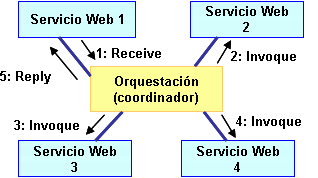
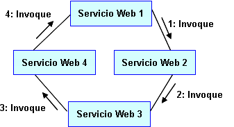
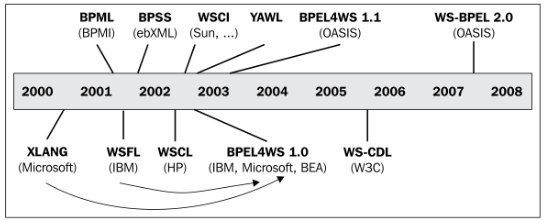
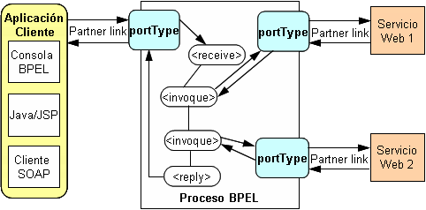
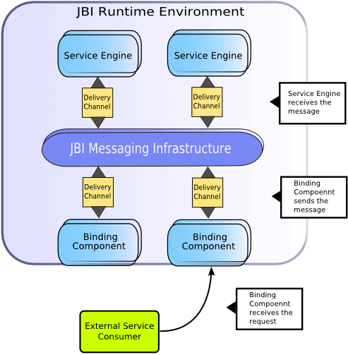
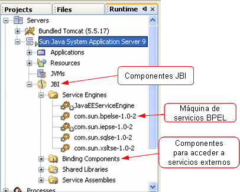

Orquestación de Servicios: BPEL
La respuesta más reciente al reto de la integración de aplicaciones es la arquitectura orientada a servicios (SOA) y las tecnologías de servicios web. El enfoque bottom-up de SOA considera que las diferentes aplicaciones de la empresa exponen sus funcionalidades a través de servicios web. De esta forma se puede acceder a diferentes funcionalidades de diferentes aplicaciones (tanto legacy como de nueva creación) de una forma común a través de servicios web.
Pero el desarrollar servicios web y exponer las funcionalidades no es suficiente. Necesitamos también alguna forma de componer dichas funcionalidades en el orden correcto. En esta sesión hablaremos de cómo realizar dicha secuenciación, concretamente nos centraremos en una de las aproximaciones posibles: la orquestación de servicios. Para ello haremos uso de un lenguaje denominado BPEL, que permite la composición de servicios según el paradigma de orquestación de servicios. El uso de BPEL hará posible una aproximación top-down (o aproximación orientada a los procesos) de SOA.
Orquestación frente a Coreografía
Los servicios Web "exponen" las operaciones de ciertas aplicaciones o sistemas de información. Consecuentemente, la combinación (composición) de varios servicios Web realmente implica la integración de las aplicaciones subyacentes y sus funcionalidades
Los servicios Web pueden combinarse de dos formas:
- Orquestación
- Correografía
Cuando se hace uso de orquestación, un proceso central (que puede ser otro servicio Web) lleva el control de los servicios Web implicados en la realización de una tarea y coordina la ejecución de las diferentes operaciones sobre dichos servicios Web. Los servicios Web orquestados no "conocen" (y no necesitan conocer) que están implicados en un proceso de composición y que forman parte de un proceso de negocio de nivel más alto. Solamente el coordinador central de la orquestación es "consciente" de la meta a conseguir, por lo que la orquestación se centraliza mediante definiciones explícitas de las operaciones y del orden en el que se deben invocar los servicios Web, tal y como se muestra en la siguiente figura. La orquestación se utiliza normalmente en procesos de negocio privados.

Cuando se hace uso de coreografía, no hay un coordinador central. En su lugar, cada servicio Web implicado en dicha coreografía "conoce" exactamente cuando ejecutar sus operaciones y con quién debe interactuar. La coreografía es un esfuerzo colaborativo centrado en el intercambio de mensajes en procesos de negocio públicos. Todos los participantes en la coreografía ncesitan estar "informados" del proceso de negocio, las operaciones a ejectuar, los mensajes a intercambiar, y el tiempo a invertir en dicho intercambio de mensajes. Mostramos este esquema a continuación.

Desde la perspectiva de la composición de servicios Web para ejecutar procesos de negocio, la orquestación es un paradigma más flexible y tiene las siguientes ventajas sobre la coreografía:
- La coordinación de los procesos componentes está gestionada de forma centralizada por un coordinador conocido.
- Los servicios Web puden incorporarse sin que sean "conscientes" de que están formando parte de un proceso de negocio mayor.
- Pueden crearse escenarios alternativos en caso de que ocurra algún fallo.
¿Por qué orquestar Servicios Web?
Los servicios Web se utilizan actualmente tanto dentro como fuera de los límites de una organización. Los servicios Web se están convirtiendo en la tecnología común para proporcionar puntos de integración entre las aplicaciones (tanto por vendedores de grandes aplicaciones de empresa, como por negocios tradicionales de internet, como la tienda electrónica Amazon.com o la máquina de búsqueda Google, que exponen interfaces en forma de servicios Web para que dichas aplicaciones sean también "integrables").
El siguiente paso lógico en el salto a un modelo centrado en servicios (Web) es la orquestación de dichos servicios en nuevos procesos de negocio y servicios de más alto nivel. Los servicios Web proporcionan una tecnología de interfaces común que unifica el modelo de integración para todos los servicios independientemente de su origen. Los beneficios de los servicios Web, tales como su descubrimiento en tiempo de ejecución y su bajo acoplamiento, contribuyen a la orquestación de servicios Web proporcionando un acercamiento al modelado y ejecución de procesos de negocio en tiempo real. La idea es construir orquestaciones sin utilizar herramientas de programación tradicionales, tales como C# o Java, con el objetivo de reducir el esfuerzo total de producir nuevos servicios y aplicaciones basadas en servicios.
¿Por qué orquestar servicios Web con BPEL?
Dentro de la orquestación de servicios, BPEL constituye un lenguaje estándar para la integración y automatización de procesos. Los procesos de negocio programados con BPEL serán capaces de ejecutarse en diferentes plataformas que cumplan dicho estándar, ofreciendo a los clientes una mayor libertad de elección.
Otras razones para utilizar orquestación de servicios y BPEL son:
- Menores costes de mantenimiento: con la utilización de un lenguaje de programación como C o Java, el mantenimiento puede resultar más difícil, especialmente si la lógica de negocio sufre cambios frecuentes. Además, no en todos los lenguajes de programación resulta fácil la manipulación de mensajes XML.
- Menores costes de soporte: Si una organización tiene la capacidad de integrar servicios Web, también será capaz de crear e invocar procesos BPEL utilizando la infraestructura de servicios Web existente. Además, BPEL tiene muchas construcciones relacionadas con la invocación de servicios Web, incluyendo el manejo de fallos, la correlación, y soporte para lógica condicional. BPEL tiene un soporte muy bueno para manejar mensajes XML a través de XPath (XPath se utiliza para referenciar partes de un mensaje XML y para realizar manipulaciones básicas de cadenas de carateres y de números).
- Finalmente, BPEL hace que sea posible ampliar el grupo de desarrolladores para realizar tareas de integración de procesos de negocio y automatización de procesos, que requerían habilidades altamente especializadas. Utilizando herramientas gráficas de diseño, incluso los no desarrolladores, tales como los analistas del negocio pueden diseñar y modificar de forma sencilla las aplicaciones a medida que el negocio requiere cambios
Además, el lenguaje BPEL proporciona soporte para:
- Elevados tiempos de ejecución. Normalmente, los procesos de negocio tardan bastante tiempo en completar su ejecución, particularmente si éstos implican interacciones con partners a través de Internet. Puede ocurrir que dichos procesos requeran minutos, horas, e incluso días antes de su finalización. Puede ocurrir que invoquen a un servicio Web y necesiten esperar la respuesta durante un periodo relativamente largo de tiempo. Si utilizásemos una aplicación Java, por ejemplo, en lugar de un proceso BPEL tendríamos que dedicar mucho tiempo a monitorizar qué procesos han terminado, y cuáles siguen todavía en ejecución. También necesitaríamos hacer un seguimiento de qué aplicaciones Java (procesos) podemos "cerrar" y cuáles tenemos que seguir manteniendo en ejecución debido a que están a la espera de recibir una respuesta.
-
Compensación. Llamamos compensación al proceso de deshacer pasos realizados en un proceso de negocio que ya se han completado
con éxito. Este concepto es uno de los más importantes en los procesos de negocio. El objetivo de la
compensación es dar marcha atrás a los efectos de actividades previas que ya se han llevado a cabo como parte de un proceso
de negocio que está siendo abandonado.
La compensación está relacionada con la naturaleza de la mayoría de procesos de negocio que se ejecutan durante largos periodos de tiempo y utilizan comunicación asíncrona con servicios Web partner débilmente acoplados. Este concepto es similar al de transacciones ACID (Atomic, Consistent, Isolation, Durable utilizadas en sistemas de información de empresas. BPEL soporta el concepto de compensación con la posibilidad de definir manejadores de compensación, que tienen un ámbito de acción específico. A esta característica la denomina Long-Running Transactions (LRT).
- Reacción ante eventos. Dichos eventos pueden ser mensajes o alarmas. Los eventos de tipo mensaje son generados por mensajes de entrada a través de la invocación de operaciones sobre los port types. Los eventos de tipo alarma están relacionados con el tiempo y se generan después de un tiempo especificado.
- Modelado de actividades concurrentes. La concurrencia se modela mediante la actividad <flow>. Ésta permite especificar escenarios concurrentes complejos, como por ejemplo el expresar dependencias de sincronización entre actividades. Es decir, podemos especificar qué actividades pueden comenzar y cuando (dependiendo de otras actividades), definiendo así dependencias complejas. Por ejemplo, podemos especificar que una cierta actividad, o varias actividades no pueden comenzar antes de que otra actividad o varias activdades hayan terminado.
- Modelos con estado. A diferencia de los servicios Web, que presentan un modelo sin estado, los procesos de negocio requieren el uso de un modelo con estado. Cuando un cliente comienza un proceso de negocio, se crea una nueva instancia. Esta instancia "vive" mientras no termine el proceso de negocio. Los mensajes enviados al proceso necesitan ser entregados a las instancias correctas del proceso de negocio. BPEL proporciona un mecanismo para utilizar datos de negocio específicos para mantener referencias a instancias específicas del proceso de negocio. A este mecanismo lo denomina correlación.
Por todo ello, BPEL resulta la opción más adecuada para orquestar procesos frente a otros lenguajes de programación, como por ejemplo Java.
El lenguaje BPEL
La aproximación orientada a procesos de SOA requiere un lenguaje para realizar una descripción relativamente simple de cómo pueden componerse los servicios Web convirtiéndose en procesos de negocio. Sería estupendo que tales descripciones pudiesen también ejecutarse, lo cual permitiría no sólo proporcionar definiciones de procesos abstractos, sino escribir especificaciones ejecutables de dichos procesos. BPEL es dicho lenguaje. Un proceso abstracto BPEL representa, de forma estándar, un conjunto de comportamientos observables.
BPEL (Business Process Execution Language) es un lenguaje de orquestación de servicios. Es un lenguaje basado en XML que soporta las tecnologías de servicios Web (incluyendo SOAP, WSDL, UDDI, WS-Reliable Messaging, WS-Addressing, WS-Coordination, y WS-Transaction).
BPEL representa una convergencia entre dos lenguajes workflow: WSFL (Web Services Flow Language) y XLANG. WSFL fue diseñado por IBM y está basado en el concepto de grafos dirigidos. XLANG fue diseñado por Microsoft y es un lenguaje estructurado en bloques. BPEL, que inicialmente recibió el nombre de BPEL4WS, combina ambas aproximaciones proporcionando un vocabulario rico para la descripción de procesos de negocio. En Abril de 2003, BEA Systems, IBM, Microsoft, SAP y Siebel Systems decidieron someter BEL4WS 1.1 al comité técnico de OASIS para su estadarización, recibiendo el nombre de WS-BPEL 2.0 (en Septiembre de 2004). En esta sesión hablaremos simplemente de BPEL (aunque nos refereremos a WS-BPEL 2.0). La siguiente figura muestra la evolución de BPEL:

BPEL puede utilizarse dentro de una empresa y entre empresas. Dentro de una empresa, el papel de BPEL es el de estandarizar la integración de aplicaciones y extender la integración de sistemas previamente aislados. Entre empresas, BPEL permite una integración más fácil y efectiva con partners del negocio. BPEL es una tecnología clave en entornos en donde las funcionalidades ya están o serán expuestas via servicios Web.
BPEL ha sido diseñado específicamente como un lenguaje para la definición de procesos de negocio. BPEL soporta dos tipos diferentes de procesos de negocio:
- Procesos de negocio ejecutables: especifican los detalles exactos de los procesos del negocio y pueden ser ejecutados en una máquina de orquestación (orchestration engine). En la mayoría de los casos BPEL se utiliza para procesos ejecutables
- Procesos abstractos de negocio: especifican solamente el intercambio de mensajes públicos entre las partes implicadas, sin incluir detalles específicos de los flujos de los procesos. No son ejecutables y raramente se utilizan.
Estructura de un proceso BPEL
Un proceso BPEL especifica el orden exacto en el que deben invocarse los servicios Web participantes, tanto de forma secuencial como en paralelo. Con BPEL podemos expresar un comportamiento condicional, por ejemplo la invocación de un servicio Web puede depender del valor de una invocación previa. También podemos construir bucles, declarar variables, copiar y asignar valores, y definir manejadores de fallos, entre otras cosas. Combinando todas estas construcciones podemos definir procesos de negocio complejos de una forma algorítmica. De hecho, debido a que los procesos de negocio son esencialmente grafos de actividades, podría ser útil expresarlos utilizando diagramas de actividad UML.
En un escenario típico, el proceso de negocio BPEL recibe una petición de un cliente (que puede ser una aplicación cliente, u otro servicio Web, entre otros). Para servir dicha petición, el proceso invoca a diversos servicios Web y finalmente responde al cliente que ha realizado la llamada. Debido a que el proceso BPEL se comunica con otros servicios Web, tiene que tener en cuenta la descripción WSDL de los servicios Web a los que llama.
Para los clientes de un proceso BPEL, éste es como cualquier otro servicio Web. Cuando definimos un proceso BPEL, esencialmente definimos un servicio Web que es una composición de otros servicios Web existentes. La interfaz del nuevo servicio Web BPEL utiliza un conjunto de port types a través de los cuales ofrece operaciones igual que cualquier otro servicio Web. Cada port type puede contener varias operaciones. Para invocar un proceso de negocio descrito con BPEL, tenemos que invocar al servicio Web resultante de la composición, tal y como mostramos en la siguiente figura.

Un proceso BPEL puede ser síncrono o asíncrono. Un proceso BPEL síncrono bloquea al cliente (aquél que usa el proceso BPEL) hasta que finaliza y devuelve el resultado a dicho cliente. Un proceso asíncrono no bloquea al al cliente. Para ello utiliza una llamada callback que devuelve un resultado (si es que lo hay). Normalmente utilizaremos procesos asíncronos para procesos que consumen mucho tiempo, y procesos síncronos para aquellos que devuelven un resultado en relativamente poco tiempo. Si un proceso BPEL utiliza servicios Web asíncronos, entonces el propio proceso BPEL normalmente también lo es. Hablaremos de los procesos asíncronos en la siguiente sesión.
La estructura básica de un documento (fichero con extensión .bpel) que define un proceso BPEL es la siguiente:
<process name="nameProcess" ... >
<partnerLinks>
<!-- Declaración de partner links -->
</partnerLinks>
<variables>
<!-- Declaración de variables -->
</variables>
<sequence>
<!-- Cuerpo principal de la definición del proceso BPEL -->
</sequence>
</process>
En la etiqueta <process> se añaden los espacios de nombres. Aquí tenemos que definir tanto el espacio de nombres objetivo ( targetNameSpace), como los namespaces para acceder a los WSDL de los servicios Web a los que invoca, y al WSDL del proceso BPEL. Tenemos que declarar también el namespace para todas las etiquetas y actividades BPEL (que puede ser el espacio de nombres por defecto, para así no tener que incluirlo en cada nombre de etiqueta BPEL). El namespace para actividades BPEL debe ser: http://schemas.xmlsoap.org/ws/2003/03/business-process/:
<process name="nameProcess"
targetNamespace= "http://..."
xmlns="http://schemas.xmlsoap.org/ws/2003/03/business-process/"
xmlns:sw1="http://..." <!-- namespace del servicio Web sw1 -->
xmlns:sw2="http://..." <!-- namespace del servicio Web sw2 -->
... >
...
</process>
Un proceso BPEL está formado por una serie de pasos. Cada uno de los pasos se denomina actividad. La etiqueta <sequence> contiene el conjunto de pasos o actividades que conforman el servicio que proporciona el proceso BPEL. Hablaremos de las actividades un poco más adelante.
La etiqueta (o elemento) <process> está siempre presente en un proceso BPEL, es decir, es el mínimo requerimiento en un fichero BPEL.
Partner Links
Lo siguiente que ha de hacerse es definir los enlaces con las diferentes "partes" que interactúan con el proceso BPEL, es lo que denominamos como partner links. Cada partner link tiene asociado un partnerLinkType específico, y que se definirá en el WSDL correspondiente.
Vamos a explicar un poco mejor este concepto. Los procesos BPEL interactuan con servicios Web externos de dos formas distintas:
- El proceso BPEL invoca operaciones sobre otros servicios Web.
- El proceso BPEL recibe invocaciones de clientes. Uno de los clientes es el usuario del proceso BPEL, que realiza la invocación inicial. Otros clientes son, por ejemplo, servicios Web que han sido invocados por el proceso BPEL, pero realizan callbacks para devolver las respuestas solicitadas. En este último caso, el proceso cliente tiene dos roles: es invocado por el proceso BPEL e invoca al proceso BPEL.
Cada proceso BPEL tiene al menos un partner link cliente, debido a que tiene que haber un cliente que invoque al proceso BPEL. Por otro lado, un proceso BPEL tendrá (normalmente) al menos un partner link a quién invoque.
BPEL trata a los clientes como partner links por dos razones. La más obvia es para proporcionar soporte para interacciones asíncronas. En interacciones asíncronas (como veremos en la siguiente sesión), los procesos necesitan invocar operaciones sobre sus clientes. Dichos procesos cliente devuelven el resultado mediante callbacks sobre el proceso que los invocó.
La segunda razón está basada en el hecho de que el proceso BPEL puede ofrecer servicios. Estos servicios, ofertados a través de port types, pueden utilizarse por más de un cliente. El proceso puede querer distinguir entre diferentes clientes y ofrecerles únicamente la funcionalidad que éstos están autorizados a utilizar.
A partir de aquí utilizaremos ncname y qname para expresar el formato que deben seguir ciertos nombres dados a los atributos de las etiquetas BPEL.
- ncname es una cadena de caracteres que debe comenzar siempre por una letra o un signo de subrayado.
- qname es un ncname que también debe mostrar de qué espacio de nombres XML proviene. Por lo tanto, un qname siempre tiene que seguir el formato tns:ncname, en donde tns es el nombre del espacio de nombres definido al comienzo del documento correspondiente.
La sintaxis para especificar los partnerLinks es:
<partnerLinks>
<partnerLink name="ncname" partnerLinkType="qname"
myrole="ncname" partnerRole="ncname">
</partnerLink>
</partnerLinks>
Cada partner link es definido por un partner link type y un nombre de rol (o dos, como veremos a continuación).
Cada partner link especifica uno o dos atributos, que tienen que ver con el rol que implementa cada uno de los servicios relacionados:
- myRole: indica el rol del propio proceso BPEL. Cuando solamente se especifica este atributo, cualquier cliente o partner puede interaccionar con el proceso BPEL sin ningún requerimiento adicional.
- partnerRole: indica el rol del partner. Si solamente definimos este atributo, estamos permitiendo la interacción con un partner o cliente que no imponga requerimientos sobre el proceso que haga la llamada.
Utilizaremos un único rol para una operación síncrona, ya que los resultados deben devolverse utilizando la misma operación. Utilizaremos dos roles en una operación asíncrona, ya que el rol del partner cambia cuando se realiza la llamada callback (hablaremos de las operaciones asíncronas en la siguiente sesión).
Los roles se definen en el documento WSDL de cada partner, cuando se especifican los partnerLinkTypes.
Partner Link Types
Un partnerLinkType especifica la relación entre dos servicios, definiendo el rol que cada servicio implementa. Es decir, declara cómo interaccionan las partes y lo que cada parte ofrece. Los nombres de los roles son cadenas de caracteres arbitrarias. Cada rol especifica exactamente un tipo portType WSDL que debe ser implementado por el servicio correspondiente.
Es fácil confundir los partner link y los partner link types, sin embargo:
- Los partner link types y los roles son extensiones especiales de WSDL definidas por la especificación BPEL. Como tales, dichos elementos se definen en los ficheros WSDL, no en el fichero del proceso BPEL.
- Partner link es un elemento BPEL 2.0. Por lo que se define en el fichero del proceso BPEL.
El siguiente código corresponde a la descripción WSDL de un proceso BPEL, al que denominaremos Saludo, en el que declaramos el tipo MyPartnerLinkType, con el rol denominado ProveedorServicioSaludo. El servicio que implemente el rol ProveedorServicioSaludo, deberá implementar SaludoPortType. En este caso, MyPartnerLinkType describe la relación entre el cliente del proceso BPEL y el propio proceso BPEL.
<!-- Extracto de Saludo.wsdl -->
<partnerLinkType name="MyPartnerLinkType">
<role name="ProveedorServicioSaludo"
portType="SaludoPortType"/>
</role>
</partnerLinkType>
A continuación mostramos un extracto del fichero que describe el proceso BPEL Saludo):
<!-- Extracto de Saludo.bpel -->
<partnerLinks>
<partnerLink name="cliente"
partnerLinkType="MyPartnerLinkType"
myRole="ProveedorServicioSaludo"/>
</partnerLinks>
Cuando utilizamos operaciones asíncronas, se definen dos roles, pero esto lo veremos en la siguiente sesión cuando hablemos de los procesos BPEL asíncronos.
Variables
Las variables se utilizan para almacenar, reformatear, y transformar mensajes que contienen el estado del proceso. Normalmente necesitaremos una variable para cada mensaje que enviemos a los partners y cada mensaje que recibamos de ellos. Aunque también podemos almacenar datos que representen el estado del proceso y no se envíen a los partners.
Para cada variable tenemos que especificar su tipo, que puede ser:
- de tipo mensaje WSDL: indicado mediante el atributo messageType
- de un tipo simple de un esquema XML: indicado mediante el atributo type
- de tipo elemento de esquema XML: indicado mediante el atributo element
La sintaxis de una declaración de variable es:
<variables>
<variable name="nombreVar"
messageType="qname" //tipo mensaje
type="qname" //tipo simple
element="qname"/> /tipo elemento
</variables>
El nombre de una variable debe ser único en su ámbito de aplicación (scope). Debe utilizarse uno y sólo uno de los tres atributos messageType, type, o element.
El siguiente ejemplo muestra tres declaraciones de variables. La primera de ellas declara una variable con el nombre PeticionArticulo, que almacena mensajes WSDL del tipo art:MensajePeticionArticulo. La segunda declaración define una variable denominada DescripcionParcialArticulo que almacena elementos XML del tipo art:DescripcionArticulo. La última declaración de variable lleva el nombre Telefono y puede almacenar un tipo de dato string de un esquema XML. Las dos primeras declaraciones asumen que los messageType y element correspondientes han sido declarados en el fichero WSDL.
<variables>
<variable name="PeticionArticulo"
messageType="art:MensajePeticionArticulo"/>
<variable name="DescripcionParcialArticulo"
element="art:DescripcionArticulo"/>
<variable name="Telefono"
type="xs:string"/>
</variables>
Cada variable tiene que declararse en un cierto ámbito y sólamente pertenece a ese ámbito, y a los ámbitos dentro de éste. Podemos declarar variables globalmente en la parte inicial de de declaraciones del proceso BPEL. Para declarar variables locales a un cierto ámbito se utiliza la etiqueta <scope>.
Las variables se utilizan normalmente en condiciones. Podemos utilizar la función getVariableData para extraer valores arbitrarios de las variables. La función tiene tres parámetros: el nombre de la variable (es un parámetro obligatorio), nombre de la parte del mensaje (opcional), y el path query (opcional). La sintaxis es la siguiente:
getVariableData ('variable-name', 'part-name', <!-- optional -->
'location-path') <!-- optional --/>
El tercer parámetro se escribe con un lenguaje de query, como por ejemplo XPath
La siguiente expresión devuelve la parte del mensaje insuredPersonData del mensaje almacenado en la variable InsuranceRequest
getVariableData ('InsuranceRequest', 'insuredPersonData')
La siguiente expresión devuelve el elemento Age de la variable InsuranceRequest
bpws:getVariableData ('InsuranceRequest', 'insuredPersonData',
'/insuredPersonData/ins:Age')
Asignación
El copiado de datos de una variable a otra es algo que ocurre bastante a menudo en un proceso de negocio. Para ello se utiliza la actividad assign. Esta actividad también puede utilizarse para copiar nuevos datos en una variable.
<assign>
<copy>
<from variable="ncname" part="ncname"/>
<to variable="ncname" part="ncname"/>
</copy>
</assign>
Actividades
Como ya hemos comentado, un proceso BPEL está formado por una serie de pasos. Cada uno de los pasos se denomina actividad. BPEL soporta dos tipos de actividades: primitivas y estructuradas.
Las actividades primitivas representan construcciones básicas, algunas de ellas son:
- <receive> : bloquea al proceso hasta que se recibe un determinado mensaje. Típicamente se utiliza para recibir un mensaje del cliente o un callback de un servicio Web partner.
- <reply> : envía un mensaje como respuesta a un mensaje recibido mediante receive.
- <invoque> : realiza una invocación sobre un sercicio Web. Puede ser síncrona (request-response) o asíncrona (one-way).
- <assign>: asigna un valor a una variable.
- <wait>: para hacer que el proceso espere un cierto tiempo.
- <throw>: para indicar fallos y excepciones.
Receive
Una actividad receive especifica un partnerLink, un portType y una operación que puede ser invocada. Esta actividad juega un papel muy importante en el ciclo de vida de un proceso de negocio, ya que permite al proceso BPEL permanecer bloqueado a la espera de la llegada de un mensaje. Una de las formas de iniciar un proceso es utilizando una actividad receive con el atributo createInstance con el valor yes (por defecto, el valor de dicho atributo es no). Una actividad receive con createInstance con valor de yes debe ser una de las actividades iniciales de un proceso. Puede haber más de una de dichas actividades, en cuyo caso la primera de ellas que sea llamada iniciará el proceso. La sintaxis para receive es:
<receive partnerLink="ncname"
portType="qname"
operation="ncname"
variable="ncname"
createInstance="yes|no">
</receive>
Reply
Una actividad reply se utiliza para enviar una respuesta después de que se haya llamado a una actividad receive. La combinación de de una actividad receive con otra actividad reply crea una operación de tipo request-response. La actividad reply se utiliza en una interacción síncrona, y especifica el mismo partner, port type y operación que la actividad receive que invocó al proceso. Con la actividad reply es posible transferir datos mediante una variable. La sintaxis de una actividad reply es la siguiente:
<reply partnerLink="ncname"
portType="qname"
operation="ncname"
variable="ncname">
</reply>
Invoque
Mediante una actividad invoque un proceso puede llamar a otro servicio Web que haya sido definido como partner. Esta actividad puede ser síncrona (operación de tipo request-response) o asíncrona (operación de tipo one-way).
Un uso asíncrono de esta actividad solamente necesita especificar una variable de entrada, ya que no hay una respuesta inmediata y por lo tanto no hay variable de salida. Un uso síncrono de invoque necesita tanto la variable de entrada como la de salida. La sintaxis es:
<invoque partnerLink="ncname"
portType="qname"
operation="ncname"
inputVariable="ncname"
outputVariable="ncname">
</invoque>
Las actividades estructuradas permiten combinar las actividades primitivas para especificar exactamente los pasos de los procesos de negocio. Algunas de ellas son:
- <sequence>: define un conjunto de actividades que se invocarán en forma de secuencia ordenada.
- <flow>: define un conjunto de actividades que se invocarán en paralelo.
- <if>: para la implementación acividades que se ejecutan dependiendo de una condición.
- <while>: para definir bucles.
- <pick>: hace que el proceso espere la llegada de algún evento y realice una determinada actividad (o conjunto de actividades), en función del evento. Básicamente se permiten dos tipos de eventos: eventos de mensaje (manejados con la etiqueta <onMessage>) y eventos de alarma (manejados con la etiqueta >onAlarm).
Relación de BPEL con BPMN
No hay una notación gráfica estándar para WS-BPEL. Algunos vendedores han inventado sus propias notaciones. Estas notaciones se benefician del hecho de que la mayoría de construcciones BPEL están estructuradas en forma de bloques. Esta característica permite una representación visual directa de las descripciones de los procesos BPEL en forma de estructurogramas, que tienen un estilo con reminiscencias de los diagramas de Nassi-Shneiderman.
Por otro lado se ha propuesto el uso de un lenguaje de modelado de procesos sustancialmente diferente a BPEL, denominado Business Process Modeling Notation (BPMN), como un front-end gráfico para capturar las descripciones de los procesos BPEL. Se han propuesto numerosas herramientas que implementan el mapeado de BPMN a BPEL, como por ejemplo la herramienta open-source BPMN2BPEL. Sin embargo, el desarrollo de estas herramientas ha expuesto las diferencias fundamentales entre BPMN y BPEL, lo que hace muy difícil, y en algunos casos imposible, el generar código BPEL legible a partir de modelos BPMN. Más difícil todavía es el problema de generar código BPEL a partir de diagramas BPMN y mantener el BPMN original y el código BPEL sincronizado, en el sentido de que una modificación en uno de ellos se propage al otro.
Pasos para desarrollar un proceso de negocio con BPEL
Para desarrollar un proceso de negocio con BPEL vamos a seguir los siguientes pasos:
- Conocer los servicios Web implicados
- Definir el WSDL del proceso BPEL
- Definir los partner link types
- Desarrollar el proceso BPEL:
4.1 Definir los partner links
4.2 Declarar las variables
4.3 Escribir la definición de la lógica del proceso
Conocer con los servicios Web implicados
Antes de comenzar a definir el proceso BPEL, tenemos que familiarizarnos con los servicios Web a los que invoca nuestro proceso de negocio. Estos servicios se denominan servicios Web partners. Para cada uno de ellos deberemos conocer los port types que proporcionan, y las operaciones y mensajes de entrada salida definidas para dichos port types.
Definir el WSDL del proceso BPEL
A continuación tenemos que exponer el proceso BPEL como un servicio Web, es decir, definir su WSDL, declarando los port types, sus operaciones y mensajes de entrada y salida.
Definir los partner link types
Como ya hemos indicado, los partner link types representan la interacción entre el proceso BPEL y los partners implicados, que incluyen tanto a los servicios Web a los que invoca dicho proceso BPEL, como al cliente que invoca al proceso BPEL.
Idealmente, cada servicio Web debe definir los correspondientes partner link types en sus ficheros WSDL. Alternativamente, podríamos definir todos los partner links types en el WSDL del proceso BPEL, aunque esta aproximación no es recomendada ya que viola el principio de encapsulación.
Comprender los partner link types es crucial para desarrollar la especificación del proceso BPEL. Algunas veces resulta útil dibujar un diagrama con todas las interacciones. Una vez que se han definido los partner link types y sus roles correspondientes, pasamos a definir el proceso de negocio.
Desarrollar el proceso BPEL
Ahora ya estamos en disposición de definir el proceso BPEL. Típicamente, un proceso BPEL espera un mensaje de entrada de un cliente, el cual comienza la ejecución del proceso de negocio.
El documento que define el proceso BPEL presenta la estructura que ya hemos indicado en apartados anteriores. Recordemos que debemos añadir:
- los espacios de nombres, tanto del proceso BPEL como de los servicios Web a los que éste llama,
- los partner links,
- las variables del proceso y
- el cuerpo principal, que especifica el orden en el que se invocan los servicios Web partners. Normalmente comienzan con una actividad <sequence>, que permite definir varias actividades que se ejecutarán de forma secuencial.
Despliegue y pruebas del proceso BPEL
Una vez que hemos desarrollado el proceso BPEL, el último paso es su despliegue en una BPEL engine, seguido, si se desea, de las pruebas correspondientes antes de su utilización en producción.
Nosotros vamos a utilizar NetBeans como herramienta para desarrollar y desplegar procesos BPEL, por lo tanto, vamos a explicar cómo se realiza el proceso de despliegue y pruebas, utilizando NetBeans 7.1
Entorno de ejecución JBI (JBI Runtime Environment)
Netbeans utiliza el entorno de ejecución JBI (JBI: Java Business Integration). Dicho entorno de ejecución incluye varios componentes que interactúan utilizando un modelo de servicios. Dicho modelo está basado en el lenguaje de descripción de servicios web WSDL 2.0. Los componentes que suministran o consumen servicios dentro del entorno JBI son referenciados como máquinas de servicios (Service Engines). Uno de estos componentes es la máquina de servicios BPEL (BPEL Service Engine), que proporciona servicios para ejecutar procesos de negocio. Los componentes que proporcionan acceso a los servicios que son externos al entorno JBI se denominan Binding Components.

Los componentes JBI se instalan formando parte del servidor de aplicaciones Glassfish.v2x. Concretamente vamos a utilizar la versión 2.1.1 del servidor de aplicaciones Glassfish, junto con Glasfish ESB versión 2.2.
Glassfish ESB está formado por componentes que dan soporte al diseño (design-time components), y que se ejecutan dentro del IDE de NetBeans, y componentes que dan soporte a la ejecución (runtime components), que se ejecutan en el servidor de aplicaciones Glassfish.
La instalación estándar de Glassfish ESB incluye una máquina de servicios BPEL y un componente de enlazado Http, que se ejecutan en el servidor de aplicaciones, en el meta-contenedor JBI. Entre los componentes de Glassfish ESB que se ejecutan com parte del IDE de NetBeans se incluyen el editor WSDL, el editor de ensamblado de servicios (CASA editor: Composite Application Service Assembly). Éste último permite "ensamblar" manualmente los servicios. Esto puede ser necesario en el caso de aplicaciones SOA complejas, para las que que la configuración por defecto que genera automáticamente NetBeans en las correspondientes Composite Applications no sea suficiente. Por ejemplo, podemos utilizar este editor para añadir/reemplazar elementos concretos WSDL (como ports, o bindings) que no se han especificado, cambiar la configuración por defecto del despliegue o incluir conexiones con endpoints de servcios externos que se despliegan de forma separada en otras aplicaciones.
Para poder ver qué componentes JBI tenemos instalados o desplegados, desde la ventana Services, expandimos el nodo Servers y el nodo GlassFish v2.x, y dentro de él, el nodo JBI. Si el nodo JBI no es visible, necesitaremos arrancar el servidor de aplicaciones. Para ello pincharemos con el botón derecho sobre el nodo GlassFish v2.x y elegimos Start en el menú emergente.

BPEL Service Engine
La máquina de servicios BPEL es un componente JBI (que satisface el estándar JSR 208) que proporciona servicios para ejecutar procesos de negocio desarrollados con WS-BPEL 2.0. Para desplegar un proceso BPEL, necesitamos añadirlo como un módulo JBI en un proyecto de composición de aplicaciones (Composite Application project).
La máquina de servicios BPEL arranca juntamente con el servidor de aplicaciones. Por lo que para desplegar y ejecutar procesos BPEL será necesario tener en marcha el servidor de aplicaciones. Cuando el servidor está en marcha, en la ventanta Services del IDE de NetBeans, observaremos un distintivo de color verde al lado del nodo GlassFish v2.x.
La máquina de servicios BPEL está representada como el componente JBI sun-bpel-engine del servidor de aplicaciones.
Proyecto de aplicaciones compuestas
El término composite application se utiliza para refererirse a alicaciones que en lugar de ser desarrolladas desde cero, son "ensambladas" a partir de servicios disponibles en una arquitectura SOA. Un proyecto de aplicaciones compuestas (Composite Application project) se utiliza para crear un ensamblado de servicios (Service Assembly) que puede desplegarse en el servidor de aplicaciones como un componente JBI.
Un proyecto BPEL no es directamente desplegable. Primero debemos añadir dicho proyecto BPEL, como un módulo JBI, en un proyecto Composite Application. A continuación podremos desplegar el proyecto Composite Application en la máquina de servicios BPEL. Al desplegar el proyecto hacemos que el ensamblado de servicios esté accesible para el servidor de aplicaciones, permitiendo así que sus unidades de servicios se ejecuten.
Para desplegar un proyecto Composite Application elegiremos la opción Deploy Project en el menú emergente que aparece al pinchar con el botón derecho sobre el nodo Composite Application project. La acción de desplegar el Composite Application project compila los ficheros de dicho proyecto, empaqueta el proceso BPEL compilado y los artefactos de servicios Web relacionados (incluyendo los ficheros WSDL y XSD) en un archivo, y lo despliega en el servidor de aplicaciones.
Creación y ejecución de casos de prueba
Dentro de un proyecto Composite Application que incluya un módulo JBI podemos también crear y ejecutar casos de prueba sobre el proceso BPEL, (que habrá sido previamente desplegado como un componente JBI, concretamente un Service Assembly, en el servidor de aplicaciones).
Los casos de prueba actúan como servicios partner remotos que envían mensajes SOAP al runtime de la máquina de servicios BPEL (Service Engine BPEL ).
De forma simple, el proceso de interacción para las pruebas es el siguiente: el runtime de la máquina de servicios BPEL recibe un mensaje SOAP, crea una instancia del proceso BPEL y comienza a ejecutar dicha instancia. Un proceso BPEL puede tener muchas instancias en ejecución. El runtime de la máquina de servicios BPEL recibe un mensaje y, mediante correlación, lo enruta a la instancia apropiada del proceso. Si no existe todavía ninguna instancia, se crea una nueva.
Para crear y obtener los resultados de las pruebas, deberemos hacer lo siguiente:
- Añadir un caso de prueba y enlazarlo con una operación BPEL.
- Determinar las propiedades de la prueba (como por ejemplo el número de segundos que debe durar como máximo la ejecución de la prueba).
- Modificar convenientemente las entradas de las pruebas, para ello editaremos el fichero Input.xml según nos interese.
- Ejecutar las pruebas. El resultado de la ejecución se comparará con el resultado esperado almacenado en el fichero Output.xml. Si ambos resultados son diferentes, se habrá detectado un error.
En los ejercicios de la sesión veremos un ejemplo práctico de despliegue y pruebas de un proyecto BPEL.
Observaciones sobre los resultados de las pruebas:
- La primera vez que ejecutemos las pruebas obtendremos como resultado la indicación de que la prueba ha fallado (se ha detectado un error). La salida producida no coincidirá con el resultado almacenado en el fichero Output.xml (que inicialmente estará vacío). Al ejecutar la prueba la primera vez, el contenido de Output.xml será reemplazado por la salida generada en esta primera ejecución.
- Si ejecutamos la prueba de nuevo sin cambiar la entrada, las ejecuciones siguientes informarán del éxito de la prueba, ya que la salida será idéntica al contenido de Output.xml.
- Si cambiamos el valor de la entrada en Input.xml y volvemos a ejecutar la prueba, entonces:
- Si la propiedad feature-status tiene como valor asignado progress, entonces la prueba indica éxito incluso aunque no coincida el resultado con Output.xml.
- Si la propiedad feature-status tiene como valor asignado done, entonces la prueba indica fallo si no coincide el resultado y guarda el resultado obtenido.
- Si pinchamos con el botón derecho del ratón sobre el caso de prueba y seleccionamos Diff sobre el menú emergente, se muestra la diferencia entre la última salida y los contenidos de Output.xml.
- En cada ejecución posterior a la primera, y asumiendo que Output.xml ya no está nunca vacío, se preserva su contenido. Es decir, una salida previa, nunca se sobreescribe con nuevos resultados (con la excepción ya comentada de la primera ejecución).
- Para ver los resultados de pruebas anteriores, podemos elegir de la lista desplegable el fichero Actual_yymmddhhmmss.xml correspondiente, y pulsar en el botón Refresh.
Podemos ver las propiedades asociadas a los tests, situándonos sobre un nodo de test de la Composite Application y pulsando con el botón derecho, elegimos "Properties". Una de las propiedades es feature-status, que acabamos de comentar. Otras propiedades son: descripción del caso de prueba, URL del wsdl a probar, nombre de los ficheros de entrada y de salida de las pruebas, ...